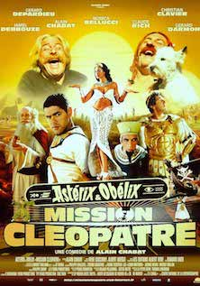

I am an engineer, entrepreneur, growth hacker and most of all I love playing guitar!
See for yourself
OSS 117OSS 117 : Le Caire, nid d'espions, is a 2006 French spy comedy film directed and co-written by Michel Hazanavicius in his feature film debut. It stars Jean Dujardin, Bérénice Bejo, and Aure Atika. Set in 1955, the film follows the exploits the French secret agent Hubert Bonisseur de La Bath / OSS 117. |
|
|  |
AsterixAsterix and Obelix Meet Cleopatra, is a 2002 French/Italian fantasy comedy film written and directed by Alain Chabat and adapted from the comic book Asterix René Goscinny and Albert Uderzo. |
Le dîner de consPierre Brochant, a Parisian publisher, attends a weekly "idiots' dinner", where guests, who are prominent Parisian businessmen, must bring along an "idiot" whom the other guests can ridicule. At the end of the dinner, the evening's champion idiot is selected. |
This page has been coded during the FullStack program @LeWagon. That was probably the best experience of my entire life.